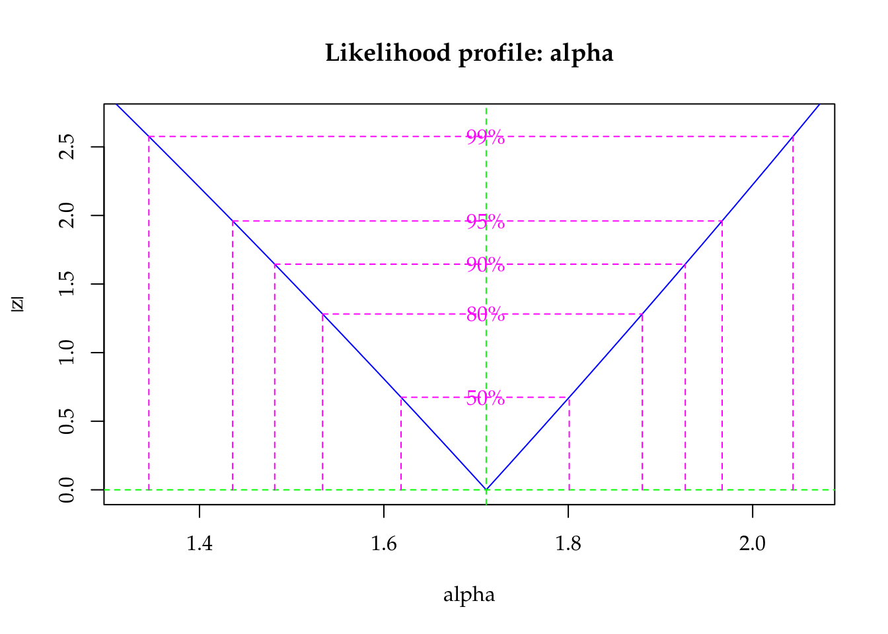
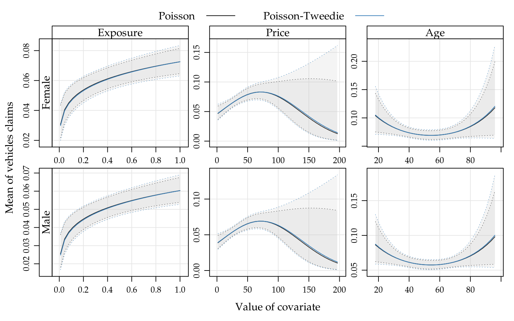
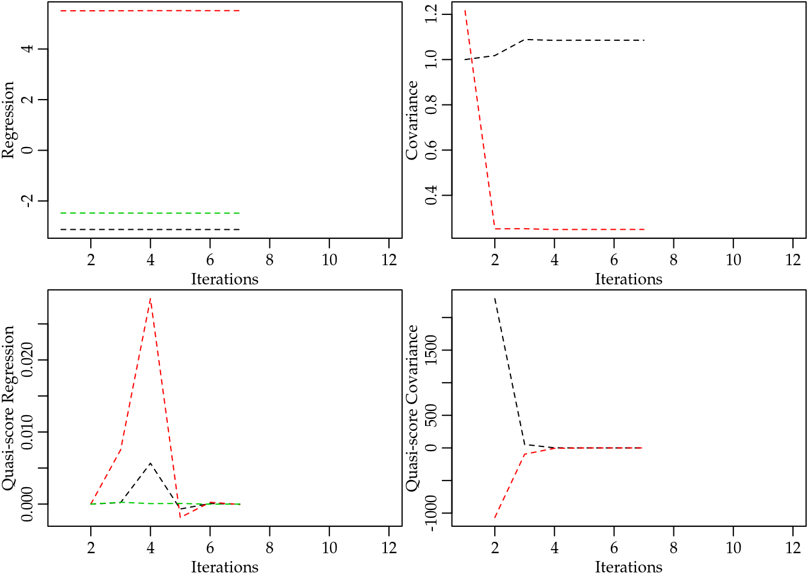
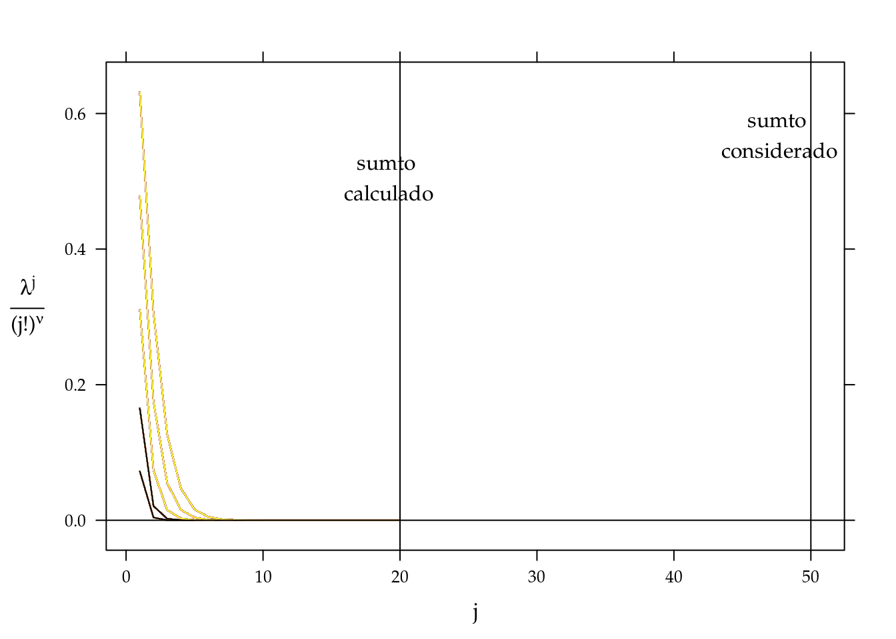
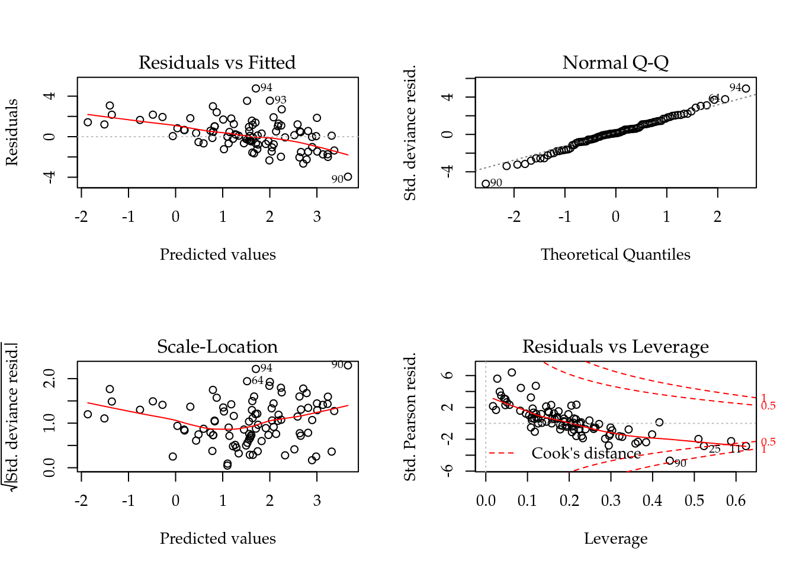

Chapter 5 Applications
In this chapter, we will bring some applications based on real data sets to show how use R packages to analyse count data.
5.1 Cotton Bolls
Cotton production can be drastically reduced by attack of defoliating insects. Depending on the growth stage, the plant can recover from the caused damage and keeps production not affected or can have the production reduced by low intensity defoliation.
A greenhouse experiment with cotton plants (Gossypium hirsutum) was done under a completely randomized design with five replicates to assess the effects of five defoliation levels (0%, 25%, 50%,75% and 100%) on the observed number of bolls produced by plants at five growth stages: vegetative, flower-bud, blossom, fig and cotton boll. The experimental unity was a pot with two plants (A. M. Silva et al. 2012, for more). The number of cotton bolls was recorded at the hasvest of the experiment.
library(lattice)
library(latticeExtra)
library(gridExtra)
library(plyr)
library(car)
library(corrplot)
library(doBy)
library(multcomp)
library(mcglm)
library(MRDCr)
ls("package:MRDCr")## [1] "apc" "calc_mean_cmp"
## [3] "calc_mean_gcnt" "calc_var_cmp"
## [5] "cambras" "capdesfo"
## [7] "capmosca" "cmp"
## [9] "conftemp" "confterm"
## [11] "convergencez" "dcmp"
## [13] "dgcnt" "dpgnz"
## [15] "gcnt" "led"
## [17] "llcmp" "llgcnt"
## [19] "llpgnz" "nematoide"
## [21] "ninfas" "panel.beeswarm"
## [23] "panel.cbH" "panel.groups.segplot"
## [25] "peixe" "pgnz"
## [27] "postura" "prepanel.cbH"
## [29] "seguros" "soja"# Documentation in Portuguese.
help(capdesfo, help_type = "html")str(capdesfo)## 'data.frame': 125 obs. of 4 variables:
## $ est : Factor w/ 5 levels "vegetativo","botão floral",..: 1 1 1 1 1 1 1 1 1 1 ...
## $ des : num 0 0 0 0 0 0.25 0.25 0.25 0.25 0.25 ...
## $ rept: int 1 2 3 4 5 1 2 3 4 5 ...
## $ ncap: int 10 9 8 8 10 11 9 10 10 10 ...levels(capdesfo$est) <- c("vegetative",
"flower-bud",
"blossom",
"fig",
"cotton boll")
xtabs(~est + des, data = capdesfo)## des
## est 0 0.25 0.5 0.75 1
## vegetative 5 5 5 5 5
## flower-bud 5 5 5 5 5
## blossom 5 5 5 5 5
## fig 5 5 5 5 5
## cotton boll 5 5 5 5 5Figure 5.1 (top) shows the beeswarm plot of number of cotton bolls recorded for each combination of defoliation level and growth stage. All the points in the sample means and variances dispersion diagram (bottom) are below the identity line, clearly suggesting data with underdispersion.
Figure 5.1: (top) Number of bolls produced for each artificial defoliation level and each growth stage. (bottom) Sample variance against the sample mean of the five replicates for each combination of defoliation level and growth stage.
The exploratory data analysis, although simple, was able to detect departures from the Poisson equidispersion assumption. So, we have in advance few conditions met for the use of GLM Poisson as a regression model to analyse this experiment.
Poisson, as being a process derived from the memoryless waiting times Exponential distribuition, implies that each boll is an independent event in the artificial subjacent domain, that can be thought was the natural resource domain that the plant has to allocate bolls. Its is easy to assume, based on plant fisiology, that the probability of a boll decreases with the number of previous bolls because the plant’s resource to produce bolls is limited and it is a non memoryless process equivalent.
Based on the exploratory data analysis, a predictor with 2nd order effect of defoliation for each growth stage should be enough to model the number of bolls mean in a regression model. The analysis and assessment of the effects of the experimental factors are based on the Poisson, Gamma-count and Poisson Tweedie models.
m0 <- glm(ncap ~ est * (des + I(des^2)),
data = capdesfo,
family = poisson)
summary(m0)##
## Call:
## glm(formula = ncap ~ est * (des + I(des^2)), family = poisson,
## data = capdesfo)
##
## Deviance Residuals:
## Min 1Q Median 3Q Max
## -1.0771 -0.3098 -0.0228 0.2704 1.1665
##
## Coefficients:
## Estimate Std. Error z value Pr(>|z|)
## (Intercept) 2.2142 0.1394 15.89 <2e-16 ***
## estflower-bud -0.0800 0.2007 -0.40 0.69
## estblossom -0.0272 0.2001 -0.14 0.89
## estfig -0.1486 0.2051 -0.72 0.47
## estcotton boll 0.1129 0.1922 0.59 0.56
## des 0.3486 0.6805 0.51 0.61
## I(des^2) -0.7384 0.6733 -1.10 0.27
## estflower-bud:des 0.1364 0.9644 0.14 0.89
## estblossom:des -1.5819 1.0213 -1.55 0.12
## estfig:des 0.4755 1.0194 0.47 0.64
## estcotton boll:des -0.8210 0.9395 -0.87 0.38
## estflower-bud:I(des^2) 0.1044 0.9447 0.11 0.91
## estblossom:I(des^2) 1.4044 1.0191 1.38 0.17
## estfig:I(des^2) -0.9294 1.0323 -0.90 0.37
## estcotton boll:I(des^2) 1.0757 0.9210 1.17 0.24
## ---
## Signif. codes: 0 '***' 0.001 '**' 0.01 '*' 0.05 '.' 0.1 ' ' 1
##
## (Dispersion parameter for poisson family taken to be 1)
##
## Null deviance: 75.514 on 124 degrees of freedom
## Residual deviance: 25.331 on 110 degrees of freedom
## AIC: 539.7
##
## Number of Fisher Scoring iterations: 4logLik(m0)## 'log Lik.' -255 (df=15)We fit the GLM Poisson regression model using the stardard glm() function in R. The fitted model summary shows the estimated parameters for the second order effect of defoliation crossed with growth stages levels. The residual deviance was 25.33 based on 110 degrees of freedoom. The ratio \(25.33/110 = 0.23\) is a strong evidence against Poisson equidispersion assumption that uses a dispersion parameter equals 1.
anova(m0, test = "Chisq")## Analysis of Deviance Table
##
## Model: poisson, link: log
##
## Response: ncap
##
## Terms added sequentially (first to last)
##
##
## Df Deviance Resid. Df Resid. Dev Pr(>Chi)
## NULL 124 75.5
## est 4 19.96 120 55.6 0.00051 ***
## des 1 15.86 119 39.7 6.8e-05 ***
## I(des^2) 1 1.29 118 38.4 0.25557
## est:des 4 6.71 114 31.7 0.15212
## est:I(des^2) 4 6.36 110 25.3 0.17388
## ---
## Signif. codes: 0 '***' 0.001 '**' 0.01 '*' 0.05 '.' 0.1 ' ' 1The analysis of deviance table did not stated effect of any interactions, neither second order effect of defiliation. Although, all these effects are noticeable in Figure ??.
Figure 5.2: The 4 plots for checking departures of assumptions in the GLM-Poisson regression model for the number of cotton bolls.
Figure ?? displays the four residual plots for the fitted model. Based on these plots, there is no concern about mispecifications regarding to the model predictor or influential observations. The only remarkable aspect is about the range of the stardartized deviance residuals quite distant from the expected -3 to 3 from the normal distribution. Once more, these is another measure indicating a underdispersed count data.
The gcnt() is a function defined in the MRDCr package (Walmes Marques Zeviani, Junior, and Taconeli 2016) to fit the Gamma-Count regression model. This function fits a GML-Poisson to use the estimates as initial values to optimize Gamma-Count likelihood using optim() through bblme package (Bolker and Team 2016).
m1 <- gcnt(ncap ~ est * (des + I(des^2)),
data = capdesfo)
summary(m1)## Maximum likelihood estimation
##
## Call:
## bbmle::mle2(minuslogl = llgcnt, start = start, data = list(y = y,
## X = X, offset = off), vecpar = TRUE)
##
## Coefficients:
## Estimate Std. Error z value Pr(z)
## alpha 1.7110 0.1352 12.66 < 2e-16 ***
## (Intercept) 2.2580 0.0593 38.05 < 2e-16 ***
## estflower-bud -0.0765 0.0854 -0.90 0.37025
## estblossom -0.0253 0.0851 -0.30 0.76616
## estfig -0.1398 0.0872 -1.60 0.10885
## estcotton boll 0.1084 0.0818 1.33 0.18476
## des 0.3294 0.2896 1.14 0.25543
## I(des^2) -0.6997 0.2866 -2.44 0.01464 *
## estflower-bud:des 0.1337 0.4105 0.33 0.74456
## estblossom:des -1.5020 0.4345 -3.46 0.00055 ***
## estfig:des 0.4218 0.4336 0.97 0.33062
## estcotton boll:des -0.7820 0.3998 -1.96 0.05046 .
## estflower-bud:I(des^2) 0.0943 0.4021 0.23 0.81452
## estblossom:I(des^2) 1.3382 0.4335 3.09 0.00202 **
## estfig:I(des^2) -0.8333 0.4390 -1.90 0.05768 .
## estcotton boll:I(des^2) 1.0222 0.3920 2.61 0.00911 **
## ---
## Signif. codes: 0 '***' 0.001 '**' 0.01 '*' 0.05 '.' 0.1 ' ' 1
##
## -2 log L: 408During the optimization process for this dataset, optim() has found NaN when evaluating the likelihood. This occurs due little numerical precision to calculate the difference of Gamma CDFs on tails or for extreme values, resulting in numerical zeros and corresponding -Inf log-likelihood. This is a numerical problem that can narrow, or make things difficult, the use of Gamma-Count regression model.
The dispersion parameter is the first position in the parameter vector. The optimization was carried out on the log scale to avoid problems regarding to bounded parameter spaces. As the dispersion parameter is in fact interpreted as a precision coefficient, the positive estimate indicates an underdispersed count. According to the \(z\) statistic, \(\hat{alpha}\) is significantly different from zero (Poisson case). Poisson is special case of Gamma-Count when \(\alpha = 0\), so we can perform a likelihood ratio test to the hypothesis \(H_0: \alpha = 0\).
# Likelihood ratio test.
chi <- 2 * (logLik(m1) - logLik(m0))
pval <- 2 * pchisq(chi, df = 1, lower.tail = FALSE)
cat("Likelihood Ratio Test\n",
"Chisq:\t\t ", chi, "\n",
"Pr(>Chisq):\t ", pval, "\n",
sep = "")## Likelihood Ratio Test
## Chisq: 102
## Pr(>Chisq): 1.01e-23# Log-likelihood profile for alpha.
plot(profile(m1, which = "alpha"))
cbind(c(0, coef(m0)), coef(m1))## [,1] [,2]
## 0.0000 1.7110
## (Intercept) 2.2142 2.2580
## estflower-bud -0.0800 -0.0765
## estblossom -0.0272 -0.0253
## estfig -0.1486 -0.1398
## estcotton boll 0.1129 0.1084
## des 0.3486 0.3294
## I(des^2) -0.7384 -0.6997
## estflower-bud:des 0.1364 0.1337
## estblossom:des -1.5819 -1.5020
## estfig:des 0.4755 0.4218
## estcotton boll:des -0.8210 -0.7820
## estflower-bud:I(des^2) 0.1044 0.0943
## estblossom:I(des^2) 1.4044 1.3382
## estfig:I(des^2) -0.9294 -0.8333
## estcotton boll:I(des^2) 1.0757 1.0222rstd <- summary(m1)@coef[-1, 2]/summary(m0)$coeff[, 2]
plyr::each(mean, range)(rstd)## mean range1 range2
## 0.426 0.425 0.426The estimates for the location parameters were very close. The ratio between Gamma-Count parameters standard error and Poisson ones, on the other hand, were 0.426 for all estimates, for 3 decimals of precision. This leads to the conclusion that TODO relação linear no parâmetro de dispersão.
# Wald test for the interaction.
a <- c(0, attr(model.matrix(m0), "assign"))
ai <- a == max(a)
L <- t(replicate(sum(ai), rbind(coef(m1) * 0), simplify = "matrix"))
L[, ai] <- diag(sum(ai))
linearHypothesis(model = m0, # m0 is not being used here.
hypothesis.matrix = L,
vcov. = vcov(m1),
coef. = coef(m1))## Linear hypothesis test
##
## Hypothesis:
## estflower - bud:I(des^2) = 0
## estblossom:I(des^2) = 0
## estfig:I(des^2) = 0
## estcotton boll:I(des^2) = 0
##
## Model 1: restricted model
## Model 2: ncap ~ est * (des + I(des^2))
##
## Note: Coefficient covariance matrix supplied.
##
## Res.Df Df Chisq Pr(>Chisq)
## 1 114
## 2 110 4 30.5 3.8e-06 ***
## ---
## Signif. codes: 0 '***' 0.001 '**' 0.01 '*' 0.05 '.' 0.1 ' ' 1# Fitting Poisson-Tweedie model.
m2 <- mcglm(linear_pred = c(ncap ~ est * (des + I(des^2))),
matrix_pred = list(mc_id(data = capdesfo)),
link = "log",
variance = "poisson_tweedie",
power_fixed = FALSE,
data = capdesfo,
control_algorithm = list(verbose = FALSE,
max_iter = 100,
tunning = 0.5,
correct = FALSE))## Automatic initial values selected.# Parameter estimates.
summary(m2)## Call: ncap ~ est * (des + I(des^2))
##
## Link function: log
## Variance function: poisson_tweedie
## Covariance function: identity
## Regression:
## Estimates Std.error Z value
## (Intercept) 2.2143 0.0627 35.308
## estflower-bud -0.0800 0.0904 -0.886
## estblossom -0.0265 0.0900 -0.294
## estfig -0.1485 0.0924 -1.607
## estcotton boll 0.1128 0.0864 1.306
## des 0.3486 0.3065 1.137
## I(des^2) -0.7385 0.3037 -2.432
## estflower-bud:des 0.1361 0.4345 0.313
## estblossom:des -1.5875 0.4612 -3.442
## estfig:des 0.4693 0.4602 1.020
## estcotton boll:des -0.8204 0.4228 -1.940
## estflower-bud:I(des^2) 0.1048 0.4259 0.246
## estblossom:I(des^2) 1.4098 0.4609 3.059
## estfig:I(des^2) -0.9205 0.4671 -1.971
## estcotton boll:I(des^2) 1.0752 0.4149 2.592
##
## Power:
## Estimates Std.error Z value
## 1 1.01 0.136 7.43
##
## Dispersion:
## Estimates Std.error Z value
## 1 -0.781 0.217 -3.59
##
## Algorithm: chaser
## Correction: FALSE
## Number iterations: 14# Wald test for fixed effects.
anova(m2)## Wald test for fixed effects
## Call: ncap ~ est * (des + I(des^2))
##
## Covariate Chi.Square Df p.value
## 1 estflower-bud 9.54 4 0.0489
## 2 des 1.29 1 0.2555
## 3 I(des^2) 5.91 1 0.0150
## 4 estflower-bud:des 25.00 4 0.0001
## 5 estflower-bud:I(des^2) 30.72 4 0.0000# New data values for prediction.
pred <- with(capdesfo,
expand.grid(est = levels(est),
des = seq(0, 1, length.out = 30)))
# Corresponding model matrix.
X <- model.matrix(formula(m0)[-2], data = pred)
pred <- list(P = pred, GC = pred, TW = pred)
# Poisson model prediction.
aux <- confint(glht(m0, linfct = X),
calpha = univariate_calpha())$confint
colnames(aux)[1] <- "fit"
pred$P <- cbind(pred$P, exp(aux))
# Gamma-Count model prediction.
# aux <- predict(m1, newdata = X,
# interval = "confidence",
# type = "link")
# pred$GC <- cbind(pred$GC, exp(aux[, c(2, 1, 3)]))
aux <- predict(m1, newdata = X,
interval = "confidence",
type = "response")
pred$GC <- cbind(pred$GC, aux[, c(2, 1, 3)])
V <- vcov(m2)
i <- grepl("^beta", rownames(V))
eta <- X %*% coef(m2, type = "beta")$Estimates
std <- sqrt(diag(as.matrix(X %*%
as.matrix(V[i, i]) %*%
t(X))))
q <- qnorm(0.975) * c(lwr = -1, fit = 0, upr = 1)
me <- outer(std, q, FUN = "*")
aux <- sweep(me, 1, eta, FUN = "+")
pred$TW <- cbind(pred$TW, exp(aux))
pred <- ldply(pred, .id = "model")
pred <- arrange(pred, est, des, model)
key <- list(type = "o", divide = 1,
lines = list(pch = 1:nlevels(pred$model),
lty = 1, col = 1),
text = list(c("Poisson",
"Gamma-Count",
"Poisson-Tweedie")))
key <- list(lines = list(lty = 1),
text = list(c("Poisson",
"Gamma-Count",
"Poisson-Tweedie")))
key$lines$col <-
trellis.par.get("superpose.line")$col[1:nlevels(pred$model)]Figure 5.3: Fitted curves based on Poisson, Gamma-Count and Poisson-Tweedie regression models. Envelops are 95% coverage confidence bands.
c0 <- summary(m0)$coefficients[, 1:2]
c1 <- summary(m1)@coef[, 1:2]
c2 <- rbind(summary(m2)[[1]]$tau[, 1:2],
summary(m2)[[1]]$Regression[, 1:2])# Parameter estimates according to each model.
c4 <- cbind("P" = rbind(NA, c0),
"GC" = c1,
"TW" = c2)
colnames(c4) <- substr(colnames(c4), 1, 6)
round(c4, digits = 4)## P.Esti P.Std. GC.Est GC.Std TW.Est TW.Std
## NA NA 1.7110 0.1352 -0.7805 0.2174
## (Intercept) 2.2142 0.139 2.2580 0.0593 2.2143 0.0627
## estflower-bud -0.0800 0.201 -0.0765 0.0854 -0.0800 0.0904
## estblossom -0.0272 0.200 -0.0253 0.0851 -0.0265 0.0900
## estfig -0.1486 0.205 -0.1398 0.0872 -0.1485 0.0924
## estcotton boll 0.1129 0.192 0.1084 0.0818 0.1128 0.0864
## des 0.3486 0.680 0.3294 0.2896 0.3486 0.3065
## I(des^2) -0.7384 0.673 -0.6997 0.2866 -0.7385 0.3037
## estflower-bud:des 0.1364 0.964 0.1337 0.4105 0.1361 0.4345
## estblossom:des -1.5819 1.021 -1.5020 0.4345 -1.5875 0.4612
## estfig:des 0.4755 1.019 0.4218 0.4336 0.4693 0.4602
## estcotton boll:des -0.8210 0.940 -0.7820 0.3998 -0.8204 0.4228
## estflower-bud:I(des^2) 0.1044 0.945 0.0943 0.4021 0.1048 0.4259
## estblossom:I(des^2) 1.4044 1.019 1.3382 0.4335 1.4098 0.4609
## estfig:I(des^2) -0.9294 1.032 -0.8333 0.4390 -0.9205 0.4671
## estcotton boll:I(des^2) 1.0757 0.921 1.0222 0.3920 1.0752 0.41495.2 Soybean pod and beans
The tropical soils, usually poor in potassium (K), demand potassium fertilization when cultivated with soybean (Glycine max L.) to obtain satisfactory yields. Soybean production is affected by long exposition to water deficit. As postassium is a nutrient involved in the water balance in plant, by hyphotesis, a good supply of potassium avoids lose production.
The aim of this experiment was to evaluate the effects of K doses and soil humidity levels on soybean production. The experiment was carried out in a greenhouse, in pots with two plants, containing 5 dm3 of soil. The experimental design was completely randomized block with treatments in a 5 x 3 factorial arrangement. The K doses were 0, 30, 60, 120 and 180 mg dm-3 , and the soil humidity ranged from 35 to 40, 47.5 to 52.5, and 60 to 65% of the total porosity (Serafim et al. 2012, for more details).
Two count variables were recorded in this experiment: the total number of pods per plot and the total number of grains per plot. The ratio, grains/pod, can also be analysed, since the fisiological response can change it.
There is an outlier in the dataset at position 74 that must be removed. Potassion amount (K) will be converted to a categorical factor, despite it is a numerical one, to prevent concerns with lack of fit, that is not the main scope of the following analysis.
data(soja)
str(soja)## 'data.frame': 75 obs. of 5 variables:
## $ K : int 0 30 60 120 180 0 30 60 120 180 ...
## $ umid: Factor w/ 3 levels "37,5","50","62,5": 1 1 1 1 1 2 2 2 2 2 ...
## $ bloc: Factor w/ 5 levels "I","II","III",..: 1 1 1 1 1 1 1 1 1 1 ...
## $ ngra: int 136 159 156 171 190 140 193 200 208 237 ...
## $ nvag: int 56 62 66 68 82 63 86 94 86 97 ...# Removing an outlier.
soja <- soja[-74, ]
soja <- transform(soja, K = factor(K))5.2.1 Number of pods
The pod is a dehiscent fruit of a leguminous plant such as the beans and soybeans. The pod is the basic unit of production in soybean, so factors that reduces or increases the number of pods have impact in crop production.
The potassium amount (K) increased the number of pods and number of beans in all soil water content levels (A) (5.4). For lowest soil water level, the mean was fairly low than the other levels that perform very similar. The pattern driven by the mean lines suggests interaction between applied potassium amount and soil water content for both variables.
We could obtain the sample variance and sample mean for each cell combination for checking dispersion level but it would ignore the block effect, that can enlarges the variance.
xyplot(nvag + ngra ~ K,
groups = umid,
outer = TRUE,
data = soja,
type = c("p", "a"),
scales = "free",
ylab = NULL,
xlab = expression("Applied potassium amount" ~ (mg ~ dm^{-3})),
auto.key = list(title = "Soil water content (%)",
cex.title = 1,
columns = 3),
strip = strip.custom(
factor.levels = c("Number of pods",
"Number of beans")))
Figure 5.4: Number of pods and beans as function of potassium amount (K) for each soil water content level (%). Lines passes on the average of points. The mean response pattern is the same on the two variables.
The following analysis with be carried out in parallel, that is, results will be showed together in each step for the sake of comparison.
We fit Poisson (P), Gamma-Count (GC) and Poisson-Tweedie (TW) regression models. The first two were fit by maximum likelihood and the last by moments specification.
#--------------------------------------------
# Poisson.
m0 <- glm(nvag ~ bloc + umid * K,
data = soja,
family = poisson)
#--------------------------------------------
# Gamma-Count.
m1 <- gcnt(formula(m0), data = soja)
#--------------------------------------------
# Tweedie.
m2 <- mcglm(linear_pred = c(nvag ~ bloc + umid * K),
matrix_pred = list(mc_id(data = soja)),
link = "log",
variance = "poisson_tweedie",
power_fixed = TRUE,
data = soja,
control_algorithm = list(verbose = FALSE,
max_iter = 100,
tunning = 0.5,
correct = FALSE))## Automatic initial values selected.To fit Poisson and Gamma-Count, the correspond function were used in the default setting. To fit Poisson Tweedie, we power_fixed = TRUE option, since the number of pods is a close to equidispersed count variable. The Poisson-Tweedie loses identifiability in the equidispersion zone because the variance is \(var(Y) = \mu + \phi\mu^p\), then \(p\) can be any value if \(\phi\) goes to zero. We fixed \(p = 1\).
Figure 5.5: The 4 plots for checking departures of assumptions in the GLM-Poisson regression model for number of soybean pods.
Figure 5.5 shows the 4 plots based on residuals. This residuals didn’t show any departure pattern. On the contray, the axes of the qq-norm plot shows the same range, indicating a equidispersed count variable.
The maximised log-likelihood were very close for Poisson and Gamma-Count models. The profile log-likelihood for Gamma-Count dispersion parameter contains 0 inside (Figure 5.6), so indicating a close to Poisson case.
#-----------------------------------------------------------------------
# Comparing models.
# Log-likelihood.
c(P = logLik(m0), GC = logLik(m1), TW = NA)## P GC TW
## -260 -259 NAcap <-
"Profile log-likelihood for the Gamma-Count dispersion parameter. The confidence interval based on profile likelihood contains 0 inside as indicated by the solid vertical line."
# Likelihhod profile for Gamma-Count dispersion parameter.
plot(profile(m1, which = "alpha"))
abline(v = 0, lty = 2)Figure 5.6: Profile log-likelihood for the Gamma-Count dispersion parameter. The confidence interval based on profile likelihood contains 0 inside as indicated by the solid vertical line.
The estimates and standard erros also were close on the (location) regression parameters for all models. They differ only in the dispersion parameter by construction.
c0 <- summary(m0)$coefficients[, 1:2]
c1 <- summary(m1)@coef[, 1:2]
c2 <- rbind(summary(m2)[[1]]$tau[, 1:2],
summary(m2)[[1]]$Regression[, 1:2])# Parameter estimates according to each model.
c4 <- cbind("P" = rbind(NA, c0),
"GC" = c1,
"TW" = c2)
colnames(c4) <- substr(colnames(c4), 1, 6)
round(c4, digits = 4)## P.Esti P.Std. GC.Est GC.Std TW.Est TW.Std
## NA NA 0.1288 0.1655 -0.1088 0.1458
## (Intercept) 3.9537 0.0689 3.9549 0.0646 3.9537 0.0651
## blocII -0.0293 0.0409 -0.0293 0.0383 -0.0293 0.0386
## blocIII -0.0727 0.0414 -0.0726 0.0388 -0.0727 0.0390
## blocIV -0.1254 0.0419 -0.1253 0.0393 -0.1254 0.0396
## blocV -0.1079 0.0430 -0.1079 0.0403 -0.1079 0.0406
## umid50 0.1340 0.0877 0.1339 0.0822 0.1340 0.0827
## umid62,5 0.2166 0.0860 0.2163 0.0806 0.2166 0.0812
## K30 0.2743 0.0849 0.2740 0.0796 0.2743 0.0802
## K60 0.3080 0.0843 0.3076 0.0790 0.3080 0.0796
## K120 0.3288 0.0840 0.3285 0.0787 0.3288 0.0793
## K180 0.2554 0.0853 0.2551 0.0799 0.2554 0.0805
## umid50:K30 0.0632 0.1156 0.0632 0.1083 0.0632 0.1091
## umid62,5:K30 -0.1075 0.1154 -0.1073 0.1081 -0.1075 0.1089
## umid50:K60 0.1656 0.1137 0.1655 0.1066 0.1656 0.1073
## umid62,5:K60 0.1074 0.1122 0.1073 0.1052 0.1074 0.1059
## umid50:K120 0.1492 0.1134 0.1491 0.1063 0.1492 0.1070
## umid62,5:K120 0.1184 0.1140 0.1184 0.1069 0.1184 0.1077
## umid50:K180 0.3037 0.1136 0.3035 0.1065 0.3037 0.1072
## umid62,5:K180 0.1984 0.1126 0.1983 0.1055 0.1984 0.1063Until now, all models perform very close suggesting to keep the Poisson by parsimony. But for testing purposes, Gamma-Count and Poisson-Tweedie got a more significant p-value for the potassium amount \(\times\) soil water content interaction. If a 5% significance is adoted, models lead to different practical conclusions.
# Analysis of deviance table.
anova(m0, test = "Chisq")## Analysis of Deviance Table
##
## Model: poisson, link: log
##
## Response: nvag
##
## Terms added sequentially (first to last)
##
##
## Df Deviance Resid. Df Resid. Dev Pr(>Chi)
## NULL 73 323
## bloc 4 14.3 69 308 0.0064 **
## umid 2 92.9 67 215 <2e-16 ***
## K 4 136.1 63 79 <2e-16 ***
## umid:K 8 14.2 55 65 0.0779 .
## ---
## Signif. codes: 0 '***' 0.001 '**' 0.01 '*' 0.05 '.' 0.1 ' ' 1# Wald test for interaction.
a <- c(0, attr(model.matrix(m0), "assign"))
ai <- a == max(a)
L <- t(replicate(sum(ai), rbind(coef(m1) * 0), simplify = "matrix"))
L[, ai] <- diag(sum(ai))
linearHypothesis(model = m0, # m0 is not being used here.
hypothesis.matrix = L,
vcov. = vcov(m1),
coef. = coef(m1))## Linear hypothesis test
##
## Hypothesis:
## umid50:K30 = 0
## umid62,5:K30 = 0
## umid50:K60 = 0
## umid62,5:K60 = 0
## umid50:K120 = 0
## umid62,5:K120 = 0
## umid50:K180 = 0
## umid62,5:K180 = 0
##
## Model 1: restricted model
## Model 2: nvag ~ bloc + umid * K
##
## Note: Coefficient covariance matrix supplied.
##
## Res.Df Df Chisq Pr(>Chisq)
## 1 63
## 2 55 8 16 0.043 *
## ---
## Signif. codes: 0 '***' 0.001 '**' 0.01 '*' 0.05 '.' 0.1 ' ' 1# Wald test for fixed effects.
anova(m2)## Wald test for fixed effects
## Call: nvag ~ bloc + umid * K
##
## Covariate Chi.Square Df p.value
## 1 blocII 13.92 4 0.0076
## 2 umid50 7.15 2 0.0280
## 3 K30 20.93 4 0.0003
## 4 umid50:K30 15.76 8 0.0459Figure 5.7 shows the estimated cells means with 95% confidence intervals. All estimated means are equals along models in each cell. Gamma-count and Poisson-Tweedie have more shorter confidence intervals than Poisson, because the extra flexibility enebled by fitting a dispersion parameter.
Figure 5.7: Estimated cell means based on Poisson, Gamma-Count and Poisson-Tweedie regression models. Segments are 95% individual coverage confidence intervals.
We analysed the number of soybean pods. This variable showed equidispersion than Gamma-Count and Poisson-Tweedie perform very close to Poisson. For testing fixed effects, on the other hand, Poisson weren’t able to detect the interaction effect under a 5% significance level. This points out that more flexible models are powerful in detecting effects.
5.2.2 Number of grains
For the analysis of number of beans, the same steps will be carried out, just adaptating the code when needed. The first adaptation we need make is to overcome a numerical problem in the Gamma-Count implementation.
The Gamma-Count mass function, and also the likelihood, computes the difference of Gamma CDF. This difference can be numerically zero by lack of precision and this leads to a -Inf in the log-likelihood. To overcame this, we can use an artifitial offset that can prevent those zeros. The code below shows the effect of offset on the probabilities.
dgcnt## function (y, lambda, alpha)
## {
## p <- pgamma(q = 1, shape = y * alpha, rate = alpha * lambda) -
## pgamma(q = 1, shape = (y + 1) * alpha, rate = alpha *
## lambda)
## return(p)
## }
## <environment: namespace:MRDCr>y <- 0:30
lambda <- 30
alpha <- 5
off <- 1
pgamma(q = off,
shape = y * alpha,
rate = alpha * lambda) -
pgamma(q = off,
shape = (y + 1) * alpha,
rate = alpha * lambda)## [1] 0.00e+00 0.00e+00 0.00e+00 0.00e+00 0.00e+00 0.00e+00 0.00e+00
## [8] 0.00e+00 0.00e+00 0.00e+00 0.00e+00 0.00e+00 1.78e-15 1.07e-13
## [15] 4.43e-12 1.32e-10 2.86e-09 4.62e-08 5.65e-07 5.31e-06 3.89e-05
## [22] 2.24e-04 1.03e-03 3.81e-03 1.14e-02 2.80e-02 5.67e-02 9.54e-02
## [29] 1.34e-01 1.59e-01 1.59e-01off <- off * 0.5
pgamma(q = off,
shape = y * alpha,
rate = alpha * lambda) -
pgamma(q = off,
shape = (y + 1) * alpha,
rate = alpha * lambda)## [1] 0.00e+00 0.00e+00 0.00e+00 1.24e-14 6.30e-12 1.15e-09 9.09e-08
## [8] 3.48e-06 7.10e-05 8.29e-04 5.87e-03 2.63e-02 7.76e-02 1.56e-01
## [15] 2.18e-01 2.19e-01 1.60e-01 8.68e-02 3.56e-02 1.12e-02 2.74e-03
## [22] 5.25e-04 8.00e-05 9.77e-06 9.67e-07 7.80e-08 5.18e-09 2.85e-10
## [29] 1.31e-11 5.03e-13 1.64e-14The practical implication of an artificial offset is changing the size of the unit were the counts were observed, so the estimates are multiples of the those with offset 1. To be consistent, we will the same artifitial offset, 10, in all models. This offset, artifitially, assumes that the count were observed as a sum of 10 pots.
soja$off <- 10
fivenum(with(soja, ngra/off))## [1] 9.2 14.7 17.1 21.6 27.1#--------------------------------------------
# Poisson.
m0 <- glm(ngra ~ offset(log(off)) + bloc + umid * K,
data = soja,
family = poisson)
#--------------------------------------------
# Gamma-Count.
m1 <- gcnt(formula(m0), data = soja)
#--------------------------------------------
# Tweedie.
m2 <- mcglm(linear_pred = c(ngra ~ bloc + umid * K),
matrix_pred = list(mc_id(data = soja)),
link = "log",
offset = list(log(soja$off)),
variance = "poisson_tweedie",
power_fixed = FALSE,
data = soja,
control_algorithm = list(verbose = FALSE,
max_iter = 100,
tunning = 0.2,
correct = FALSE))## Automatic initial values selected.To fit Poisson Tweedie for number of beans, we set power_fixed = FALSE option, because the number of beans if a more dispersed variable than number of pods. We used 0.2 for tunning to get convergence.
Figure 5.8: The 4 plots for checking departures of assumptions in the GLM-Poisson regression model for number of soybean pods.
Figure 5.8 shows the 4 plots based on residuals. This residuals didn’t show any departure pattern regarding mispecification of the predictor (lack of fit, for example). The y axis of the qq-norm plot has range on -3 to 4, indicating an overdispersed count variable.
The maximised log-likelihood were different between Poisson and Gamma-Count models. The profile log-likelihood for Gamma-Count dispersion parameter does not contain 0 inside (Figure 5.9), so indicating a overdispersed case. The profile show a simmetric shape with almost linear or “V” shape that indicates a quadratic profile likelihood function.
#-----------------------------------------------------------------------
# Comparing models.
# Log-likelihood.
c(P = logLik(m0), GC = logLik(m1), TW = NA)## P GC TW
## -322 -316 NAcap <-
"Profile log-likelihood for the Gamma-Count dispersion parameter. The confidence interval based on profile likelihood contains 0 inside as indicated by the solid vertical line."
# Likelihhod profile for Gamma-Count dispersion parameter.
plot(profile(m1, which = "alpha"))Figure 5.9: Profile log-likelihood for the Gamma-Count dispersion parameter. The confidence interval based on profile likelihood contains 0 inside as indicated by the solid vertical line.
The estimates for location parameters were the same for all three models. The standard error for Poisson estimates were smaller than those for Gamma-Count and Poisson-Tweedie. The ratio of standard errors between Gamma-Count and Poisson were 1.3 (mean) and for Poisson-Tweedie 1.26 (mean).
c0 <- summary(m0)$coefficients[, 1:2]
c1 <- summary(m1)@coef[, 1:2]
c2 <- rbind(summary(m2)[[1]]$tau[, 1:2],
summary(m2)[[1]]$Regression[, 1:2])# Parameter estimates according to each model.
c4 <- cbind("P" = rbind(NA, c0),
"GC" = c1,
"TW" = c2)
colnames(c4) <- substr(colnames(c4), 1, 6)
round(c4, digits = 4)## P.Esti P.Std. GC.Est GC.Std TW.Est TW.Std
## NA NA -0.5231 0.1651 0.0053 0.0314
## (Intercept) 2.4994 0.0448 2.4965 0.0582 2.4995 0.0549
## blocII -0.0194 0.0266 -0.0194 0.0345 -0.0216 0.0352
## blocIII -0.0366 0.0267 -0.0367 0.0347 -0.0376 0.0353
## blocIV -0.1056 0.0272 -0.1058 0.0353 -0.1003 0.0356
## blocV -0.0931 0.0279 -0.0933 0.0362 -0.0974 0.0365
## umid50 0.1325 0.0569 0.1328 0.0740 0.1333 0.0696
## umid62,5 0.1855 0.0562 0.1860 0.0731 0.1871 0.0690
## K30 0.2980 0.0549 0.2988 0.0713 0.2992 0.0678
## K60 0.3443 0.0543 0.3452 0.0706 0.3447 0.0674
## K120 0.3649 0.0541 0.3659 0.0703 0.3662 0.0672
## K180 0.2954 0.0549 0.2962 0.0714 0.2950 0.0679
## umid50:K30 0.0434 0.0748 0.0434 0.0973 0.0401 0.0936
## umid62,5:K30 -0.1367 0.0753 -0.1371 0.0979 -0.1392 0.0940
## umid50:K60 0.1156 0.0736 0.1157 0.0957 0.1146 0.0926
## umid62,5:K60 0.0917 0.0729 0.0917 0.0948 0.0896 0.0920
## umid50:K120 0.1186 0.0733 0.1187 0.0953 0.1184 0.0923
## umid62,5:K120 0.1627 0.0737 0.1628 0.0958 0.1591 0.0937
## umid50:K180 0.2883 0.0733 0.2887 0.0953 0.2884 0.0923
## umid62,5:K180 0.2157 0.0729 0.2159 0.0947 0.2142 0.0920# Ratios between stardard errors.
cbind(GC = summary(c4[-1, 4]/c4[-1, 2]),
TW = summary(c4[-1, 6]/c4[-1, 2]))## GC TW
## Min. 1.3 1.22
## 1st Qu. 1.3 1.24
## Median 1.3 1.26
## Mean 1.3 1.26
## 3rd Qu. 1.3 1.27
## Max. 1.3 1.32The Poisson model gave the higher statistic to the rejection of the null hypothesis than Gamma-Count and Poisson-Tweedie because it is assuming a dispersion of 1 that is not the case. Gamma-Count and Poisson-Tweedie perform very similar to test the interaction.
# Analysis of deviance table.
anova(m0, test = "Chisq")## Analysis of Deviance Table
##
## Model: poisson, link: log
##
## Response: ngra
##
## Terms added sequentially (first to last)
##
##
## Df Deviance Resid. Df Resid. Dev Pr(>Chi)
## NULL 73 761
## bloc 4 28 69 733 1.1e-05 ***
## umid 2 185 67 548 < 2e-16 ***
## K 4 380 63 168 < 2e-16 ***
## umid:K 8 43 55 125 8.8e-07 ***
## ---
## Signif. codes: 0 '***' 0.001 '**' 0.01 '*' 0.05 '.' 0.1 ' ' 1# Wald test for interaction.
a <- c(0, attr(model.matrix(m0), "assign"))
ai <- a == max(a)
L <- t(replicate(sum(ai), rbind(coef(m1) * 0), simplify = "matrix"))
L[, ai] <- diag(sum(ai))
linearHypothesis(model = m0, # m0 is not being used here.
hypothesis.matrix = L,
vcov. = vcov(m1),
coef. = coef(m1))## Linear hypothesis test
##
## Hypothesis:
## umid50:K30 = 0
## umid62,5:K30 = 0
## umid50:K60 = 0
## umid62,5:K60 = 0
## umid50:K120 = 0
## umid62,5:K120 = 0
## umid50:K180 = 0
## umid62,5:K180 = 0
##
## Model 1: restricted model
## Model 2: ngra ~ offset(log(off)) + bloc + umid * K
##
## Note: Coefficient covariance matrix supplied.
##
## Res.Df Df Chisq Pr(>Chisq)
## 1 63
## 2 55 8 25.3 0.0014 **
## ---
## Signif. codes: 0 '***' 0.001 '**' 0.01 '*' 0.05 '.' 0.1 ' ' 1# Wald test for fixed effects.
anova(m2)## Wald test for fixed effects
## Call: ngra ~ bloc + umid * K
##
## Covariate Chi.Square Df p.value
## 1 blocII 12.59 4 0.0134
## 2 umid50 7.68 2 0.0214
## 3 K30 36.96 4 0.0000
## 4 umid50:K30 25.56 8 0.0012Figure 5.10 shows the estimated cells means with 95% confidence intervals. All estimated means are equals along models in each cell. Gamma-count and Poisson-Tweedie have wider confidence intervals than Poisson, because the extra variability where incorporated on the model and have increased the estimates uncertainly.
Figure 5.10: Estimated cell means based on Poisson, Gamma-Count and Poisson-Tweedie regression models. Segments are 95% individual coverage confidence intervals.
We analysed the number of soybean beans. This variable showed slight overdispersion. Gamma-count and Poisson-Tweedie performed very similiar.
5.2.3 Number of grains per pod
Analyse the number of beans per plot is better than the total number of beans, because the leter can be a side effect of the number of pods. We will analyse the number of beans using the number of pods as an offset.
#--------------------------------------------
# Poisson.
m0 <- glm(ngra ~ offset(log(nvag)) + bloc + umid * K,
data = soja,
family = poisson)
#--------------------------------------------
# Gamma-Count.
m1 <- gcnt(formula(m0), data = soja)
#--------------------------------------------
# Tweedie.
m2 <- mcglm(linear_pred = c(ngra ~ bloc + umid * K),
matrix_pred = list(mc_id(data = soja)),
link = "log",
offset = list(log(soja$nvag)),
variance = "poisson_tweedie",
power_fixed = TRUE,
data = soja,
control_algorithm = list(verbose = FALSE,
max_iter = 100,
tunning = 0.5,
correct = FALSE))## Automatic initial values selected.To accomplish the fitting, we set power_fixed = TRUE otherwise convergence wasn’t met.
Figure 5.11: The 4 plots for checking departures of assumptions in the GLM-Poisson regression model for number of soybean pods.
Figure 5.11 shows the 4 plots based on residuals. The y axis of the qq-norm plot has range on -1.5 to 1.5, indicating an underdispersed count variable.
The maximised log-likelihood were different between Poisson and Gamma-Count models. The profile log-likelihood for Gamma-Count dispersion parameter does not contain 0 inside (Figure 5.12), so indicating an underdispersed count. The profile likelihood is “V” shape that represents a quadratic profile log-likelihood function.
#-----------------------------------------------------------------------
# Comparing models.
# Log-likelihood.
c(P = logLik(m0), GC = logLik(m1), TW = NA)## P GC TW
## -271 -255 NAcap <-
"Profile log-likelihood for the Gamma-Count dispersion parameter. The confidence interval based on profile likelihood contains 0 inside as indicated by the solid vertical line."
# Likelihhod profile for Gamma-Count dispersion parameter.
plot(profile(m1, which = "alpha"))Figure 5.12: Profile log-likelihood for the Gamma-Count dispersion parameter. The confidence interval based on profile likelihood contains 0 inside as indicated by the solid vertical line.
The point estimates for location parameters were, once more, the same for all three models. The standard error for Poisson estimates were greater than those for Gamma-Count and Poisson-Tweedie.
c0 <- summary(m0)$coefficients[, 1:2]
c1 <- summary(m1)@coef[, 1:2]
c2 <- rbind(summary(m2)[[1]]$tau[, 1:2],
summary(m2)[[1]]$Regression[, 1:2])# Parameter estimates according to each model.
c4 <- cbind("P" = rbind(NA, c0),
"GC" = c1,
"TW" = c2)
colnames(c4) <- substr(colnames(c4), 1, 6)
round(c4, digits = 4)## P.Esti P.Std. GC.Est GC.Std TW.Est TW.Std
## NA NA 1.1225 0.1648 -0.6764 0.0446
## (Intercept) 0.8482 0.0447 0.8510 0.0255 0.8482 0.0254
## blocII 0.0113 0.0266 0.0114 0.0152 0.0113 0.0151
## blocIII 0.0363 0.0267 0.0363 0.0152 0.0363 0.0152
## blocIV 0.0194 0.0272 0.0195 0.0155 0.0194 0.0155
## blocV 0.0161 0.0280 0.0163 0.0159 0.0161 0.0159
## umid50 -0.0019 0.0569 -0.0023 0.0325 -0.0019 0.0324
## umid62,5 -0.0312 0.0563 -0.0317 0.0321 -0.0312 0.0320
## K30 0.0229 0.0549 0.0221 0.0313 0.0229 0.0312
## K60 0.0345 0.0544 0.0337 0.0310 0.0345 0.0309
## K120 0.0353 0.0541 0.0344 0.0309 0.0353 0.0308
## K180 0.0406 0.0549 0.0399 0.0313 0.0406 0.0312
## umid50:K30 -0.0187 0.0748 -0.0187 0.0427 -0.0187 0.0426
## umid62,5:K30 -0.0285 0.0753 -0.0281 0.0429 -0.0285 0.0428
## umid50:K60 -0.0482 0.0736 -0.0483 0.0420 -0.0482 0.0419
## umid62,5:K60 -0.0140 0.0729 -0.0140 0.0416 -0.0140 0.0415
## umid50:K120 -0.0304 0.0733 -0.0305 0.0418 -0.0304 0.0417
## umid62,5:K120 0.0455 0.0738 0.0454 0.0421 0.0455 0.0420
## umid50:K180 -0.0163 0.0733 -0.0167 0.0418 -0.0163 0.0417
## umid62,5:K180 0.0169 0.0729 0.0167 0.0416 0.0169 0.0415# Ratios between stardard errors.
cbind(GC = summary(c4[-1, 4]/c4[-1, 2]),
TW = summary(c4[-1, 6]/c4[-1, 2]))## GC TW
## Min. 0.57 0.569
## 1st Qu. 0.57 0.569
## Median 0.57 0.569
## Mean 0.57 0.569
## 3rd Qu. 0.57 0.569
## Max. 0.57 0.569None of the experimental factors had effect on the number of beans per pod. Althought, Gamma-Count and Poisson-Tweedie showed more favorable statistics to the rejection of the null hypothesis than Poisson.
# Analysis of deviance table.
anova(m0, test = "Chisq")## Analysis of Deviance Table
##
## Model: poisson, link: log
##
## Response: ngra
##
## Terms added sequentially (first to last)
##
##
## Df Deviance Resid. Df Resid. Dev Pr(>Chi)
## NULL 73 34.2
## bloc 4 2.03 69 32.2 0.73
## umid 2 1.75 67 30.5 0.42
## K 4 3.83 63 26.6 0.43
## umid:K 8 2.65 55 24.0 0.95# Wald test for interaction.
a <- c(0, attr(model.matrix(m0), "assign"))
ai <- a == max(a)
L <- t(replicate(sum(ai), rbind(coef(m1) * 0), simplify = "matrix"))
L[, ai] <- diag(sum(ai))
linearHypothesis(model = m0, # m0 is not being used here.
hypothesis.matrix = L,
vcov. = vcov(m1),
coef. = coef(m1))## Linear hypothesis test
##
## Hypothesis:
## umid50:K30 = 0
## umid62,5:K30 = 0
## umid50:K60 = 0
## umid62,5:K60 = 0
## umid50:K120 = 0
## umid62,5:K120 = 0
## umid50:K180 = 0
## umid62,5:K180 = 0
##
## Model 1: restricted model
## Model 2: ngra ~ offset(log(nvag)) + bloc + umid * K
##
## Note: Coefficient covariance matrix supplied.
##
## Res.Df Df Chisq Pr(>Chisq)
## 1 63
## 2 55 8 8.1 0.42# Wald test for fixed effects.
anova(m2)## Wald test for fixed effects
## Call: ngra ~ bloc + umid * K
##
## Covariate Chi.Square Df p.value
## 1 blocII 6.03 4 0.197
## 2 umid50 1.26 2 0.534
## 3 K30 2.09 4 0.719
## 4 umid50:K30 8.20 8 0.414Figure 5.13 shows the estimated cells means with 95% confidence intervals. All estimated means are equals along models in each cell. Gamma-count and Poisson-Tweedie have more shorter confidence intervals than Poisson.
Figure 5.13: Estimated cell means based on Poisson, Gamma-Count and Poisson-Tweedie regression models. Segments are 95% individual coverage confidence intervals.
We analysed the number of beans por pod in a experiment with soybeans. This variable showed underdispersion so Gamma-Count and Poisson-Tweedie perform better than Poisson.
5.3 Number of vehicle claims
Em companhias de seguros é de fundamental importância especificar um preço adequado correspondente a um segurado, a fim de cobrir o risco assumido. Tal tarefa geralmente envolve a avaliação de características do plano de seguro que influenciam na taxa de sinistros observada.
Nesta seção nós apresentamos a análise de um conjunto do dados referentes ao acompanhamento de 16483 clientes de uma seguradora de veículos ao longo de um ano. Os dados estão disponíveis no pacote MRDCr (com documentação em português) e podem ser carregados com
##----------------------------------------------------------------------
## Load and organize data
data(package = "MRDCr")
help(seguros, h = "html")Após a tradução dos níveis das variáveis categóricas a estrutura dos dados fica
## Translate levels of categorical variables and colnames
colnames(seguros) <- c("age", "sex", "price", "expo", "nclaims")
levels(seguros$sex) <- c("Female", "Male")
str(seguros)## 'data.frame': 16483 obs. of 5 variables:
## $ age : int 59 45 42 63 36 33 35 63 54 32 ...
## $ sex : Factor w/ 2 levels "Female","Male": 1 2 2 1 1 2 2 2 2 2 ...
## $ price : num 24.6 23.4 86.6 77.5 25.9 ...
## $ expo : num 0.5 0.7 0.79 0.01 0.51 0.79 0.81 0.01 0.76 0.79 ...
## $ nclaims: int 1 0 0 0 0 0 0 0 0 0 ...In this dataset a variável age é mensurada em anos, e price em 1000 reais. A variável expo representa o período de cobertura do cliente, durante o ano sob análise, um valor de 0.5 significa que o cliente esteve exposto ao sinistro durante metade do ano.
A Figura 5.14 mostra a descrição das variáveis a serem utilizadas na análise. Embora esses gráficos não considerem todas as variáveis conjuntamente, o gráfico à esquerda sugere que há um excesso de contagens nulas, no geral 95.183% das contagens são 0.
Figure 5.14: Relative frequencies for number of vehicle claims, and empirical densities to price of vehicle, age of clients and exposure time by sex of insurance clients.
Para análise desses dados consideramos efeitos quadráticos para variáveis contínuas e intercepto variando conforme sexo do cliente. price foi tomada como preditor pode ser escrito como
em R definimos o preditor conforme sintaxe para objetos da classe formula. Note que a variável expo é envolta na função offset e sendo assim é considerado apenas como denominador das contagens.
## Define preditor
form0 <- nclaims ~ offset(log(expo)) + sex +
price + I(price^2) + age + I(age^2)Nós ajustamos os modelos de regressão Poisson e Poisson-Tweedie usando os frameworks stats::glm e mcglm::mcglm, que se baseam em máxima verossimilhança e especificação por momentos respectivamente.
## Fit Poisson
m0PO <- glm(form0, data = seguros, family = poisson)
## Fit Poisson-Tweedie
m0PT <- mcglm(
linear_pred = c(form0),
matrix_pred = list(mc_id(seguros)),
link = "log",
variance = "poisson_tweedie",
power_fixed = FALSE,
data = seguros)## Automatic initial values selected.Os parâmetros de regressão estimados nos modelos Poisson e Poisson-Tweedie são exibidos abaixo juntamente com seus erros padrão. Uma coluna com a razão entre as estimatimas e erros-padrão é acrescida. Note que as estimativas muito similares e os erros-Padrão são em torno de 20% maiores quando considerado o modelo Poisson-Tweedie.
##----------------------------------------------------------------------
## Parameter estimates
parPO <- summary(m0PO)$coefficients[, 1:2]
parPT <- summary(m0PT)[[1]]$Regression[, 1:2]## Call: nclaims ~ offset(log(expo)) + sex + price + I(price^2) + age +
## I(age^2)
##
## Link function: log
## Variance function: poisson_tweedie
## Covariance function: identity
## Regression:
## Estimates Std.error Z value
## (Intercept) -2.277314 4.76e-01 -4.79
## sexMale -0.190856 7.69e-02 -2.48
## price 0.016413 6.03e-03 2.72
## I(price^2) -0.000115 5.65e-05 -2.03
## age -0.032210 1.82e-02 -1.77
## I(age^2) 0.000301 1.72e-04 1.75
##
## Power:
## Estimates Std.error Z value
## 1 2.2 1.12 1.96
##
## Dispersion:
## Estimates Std.error Z value
## 1 12.1 37.4 0.322
##
## Algorithm: chaser
## Correction: TRUE
## Number iterations: 10pars <- cbind(parPO, parPT)
cbind(pars, cbind("RatioEst" = pars[, 3]/pars[, 1],
"RatioStd" = pars[, 4]/pars[, 2]))## Estimate Std. Error Estimates Std.error RatioEst
## (Intercept) -1.703449 3.91e-01 -2.277314 4.76e-01 1.337
## sexMale -0.175449 6.38e-02 -0.190856 7.69e-02 1.088
## price 0.018583 5.28e-03 0.016413 6.03e-03 0.883
## I(price^2) -0.000125 5.03e-05 -0.000115 5.65e-05 0.921
## age -0.038209 1.50e-02 -0.032210 1.82e-02 0.843
## I(age^2) 0.000336 1.41e-04 0.000301 1.72e-04 0.895
## RatioStd
## (Intercept) 1.22
## sexMale 1.20
## price 1.14
## I(price^2) 1.12
## age 1.22
## I(age^2) 1.22Embora tenhamos ajustados os modelos e avaliados seus resultados, uma suposição que é inerente ao modelo não foi avaliada. A inclusão do offset (exposição) pressupõe relação identidade entre a exposição e o número médio de sinistros (\(\mu_i \texttt{expo}_i = \lambda_i\)), em outras palavras, sob as mesmas condições esperamos que um indivíduo com tempo de exposição de \(1\) ano tenha o dobro de sinistros do que um indivíduo com tempo de exposição de \(0.5\). A avaliação dessa suposição é realizada estimando esse coeficiente e comparando-o com o valor fixado.
## Define preditors (free offset of first order and second order)
form1 <- nclaims ~ log(expo) + sex +
price + I(price^2) + age + I(age^2)
## Fit Poisson
m1PO <- glm(form1, data = seguros, family = poisson)
## Fit Poisson-Tweedie
m1PT <- mcglm(linear_pred = c(form1),
matrix_pred = list(mc_id(seguros)),
link = "log",
variance = "poisson_tweedie",
power_fixed = FALSE,
data = seguros)## Automatic initial values selected.Nos modelos Poisson o método anova em R realiza o teste de razão de verossimilhanças para modelos aninhados.
## Analysis of deviance table for nested models
(an <- anova(m0PO, m1PO, test = "Chisq"))## Analysis of Deviance Table
##
## Model 1: nclaims ~ offset(log(expo)) + sex + price + I(price^2) + age +
## I(age^2)
## Model 2: nclaims ~ log(expo) + sex + price + I(price^2) + age + I(age^2)
## Resid. Df Resid. Dev Df Deviance Pr(>Chi)
## 1 16477 6495
## 2 16476 6269 1 226 <2e-16 ***
## ---
## Signif. codes: 0 '***' 0.001 '**' 0.01 '*' 0.05 '.' 0.1 ' ' 1Com a estimação do coeficiente para \(\log(\texttt{expo})\), houve uma diferença de 226.5 em relação ao modelo cujo coeficiente é fixado em 1, evidenciando que a suposição de identidade entre o a exposição e as contagens não é atendida.
Para os modelos Poisson-Tweedie os testes de razão de verossimilhanças também são possíveis, porém tendem a ser computacionalmente intensivos uma vez que a função de densidade é definida por uma integral intratável. Sendo assim uma alternativa é comparar os modelos via measures of Goodness-of-Fit que não precisam da verossimilhança like pseudo Gaussian log-likelihood (plogLik), pseudo Akaike Information Criterion (pAIC), pseudo Kullback-Leibler Information Criterion (pKLIC) and Error Sum of Squares (ESS), que além de mais rápidas podem ser utilizadas para o modelo Poisson-Tweedie estendido que não se baseia em verossimilhança. Essas medidas são calculadas com função mcglm::gof.
## Measures of goodness-of-fit for compare nested models
goflist <- lapply(list(m0PT, m1PT), gof)
(gofPT <- do.call("rbind", goflist))## plogLik Df pAIC pKLIC pBIC
## 1 -3276 8 6569 6744 6630
## 2 -3126 9 6270 6445 6339Da mesma forma nos modelos Poisson-Tweedie também há fortes indicações de que o coeficiente para o logarítimo das exposições não seja \(1\). Sendo assim seguimos as análises com os modelos que consideram a estimação do efeito dos tempos de exposição.
As estimativas pontuais com erros-padrão são obtidas da mesma forma que nos primeiros modelos ajustados. Note que não houve uma mudança drástica nas estimativas comparando ao modelo com offset, indicando que não há relação entre os tempos de exposição e as covariáveis. A similaridade das estimativas do modelo Poisson e Poisson-Tweedie se mantém assim como o aumento em 20% nos erros-padrão.
##----------------------------------------------------------------------
## Parameter estimates
parPO <- summary(m1PO)$coefficients[, 1:2]
parPT <- summary(m1PT)[[1]]$Regression[, 1:2]## Call: nclaims ~ log(expo) + sex + price + I(price^2) + age + I(age^2)
##
## Link function: log
## Variance function: poisson_tweedie
## Covariance function: identity
## Regression:
## Estimates Std.error Z value
## (Intercept) -2.092150 4.75e-01 -4.41
## log(expo) 0.192759 4.72e-02 4.08
## sexMale -0.184397 7.68e-02 -2.40
## price 0.016408 6.11e-03 2.69
## I(price^2) -0.000114 5.75e-05 -1.98
## age -0.034693 1.81e-02 -1.91
## I(age^2) 0.000320 1.71e-04 1.87
##
## Power:
## Estimates Std.error Z value
## 1 1.83 0.873 2.1
##
## Dispersion:
## Estimates Std.error Z value
## 1 4.36 10.5 0.416
##
## Algorithm: chaser
## Correction: TRUE
## Number iterations: 10pars <- cbind(parPO, parPT)
cbind(pars, cbind("RatioEst" = pars[, 3]/pars[, 1],
"RatioStd" = pars[, 4]/pars[, 2]))## Estimate Std. Error Estimates Std.error RatioEst
## (Intercept) -2.135916 3.91e-01 -2.092150 4.75e-01 0.980
## log(expo) 0.186930 4.11e-02 0.192759 4.72e-02 1.031
## sexMale -0.184568 6.38e-02 -0.184397 7.68e-02 0.999
## price 0.017008 5.21e-03 0.016408 6.11e-03 0.965
## I(price^2) -0.000120 4.94e-05 -0.000114 5.75e-05 0.949
## age -0.033467 1.49e-02 -0.034693 1.81e-02 1.037
## I(age^2) 0.000308 1.41e-04 0.000320 1.71e-04 1.039
## RatioStd
## (Intercept) 1.21
## log(expo) 1.15
## sexMale 1.20
## price 1.17
## I(price^2) 1.16
## age 1.21
## I(age^2) 1.21Finalmente a Figura @(fig:claims-pred) apresenta as curvas de predição conforme cada variável, como temos mais de uma covariável numérica no modelo, fixamos as demais variáveis seu valor mediano para construção das curvas. O efeito quadrático das variáveis price e age é evidente. A média de sinistros é maior para veículos entre 50 e 100 mil reais, veículos de valores baixos ou muito elevados tendem a ter um taxa de sinistros menor, o que faz sentido no mercado brasileiro onde furtos e acidentes ocorrem com maior frequência em carros populares. Para a idade temos a interpretação contrária, espera-se menos sinistros para idades medianas, entre 40 e 70 anos e maiores para jovens e idosos.
Comparando os modelos temos curvas de predição e intervalos de confiança muito similares, sendo levemente maiores quando considerado o Poisson-Tweedie. O que se destaque no gráfico é a diferença nos intervalos de confiança para o preço do veículo, nesse caso o modelo Poisson-Tweedie é muito mais conservador onde há menos observações, no intervalo de preços mais elevados.
cap <- paste("Curves of predict values an confidence intervals (95\\%)",
"based on Poisson and Poisson-Tweedie regression models",
"for each numerical covariate setting the others in the",
"median.")
##-------------------------------------------
## Prediction to exposure
aux <- with(seguros, {
expand.grid(
expo = seq(min(expo), max(expo), length.out = 30),
sex = unique(sex),
price = median(price),
age = median(age)
)
})
da <- data.frame(var = "Exposure", x = aux$expo, sex = aux$sex)
X <- model.matrix(update(form1, NULL ~ .), data = aux)
pred <- list(PO = da, PT = da)
## Poisson model
aux <- confint(glht(m1PO, linfct = X),
calpha = univariate_calpha())$confint
colnames(aux)[1] <- "fit"
pred$PO <- cbind(pred$PO, exp(aux)[, c("lwr", "fit", "upr")])
## Poisson-Tweedie model
qn <- qnorm(0.975) * c(lwr = -1, fit = 0, upr = 1)
V <- vcov(m1PT)
i <- grepl("beta", colnames(V))
eta <- X %*% coef(m1PT, type = "beta")$Estimates
std <- sqrt(diag(as.matrix(X %*% as.matrix(V[i, i]) %*% t(X))))
me <- outer(std, qn, FUN = "*")
aux <- sweep(me, 1, eta, FUN = "+")
pred$PT <- cbind(pred$PT, exp(aux))
## Organize predictions
predsex <- ldply(pred, .id = "model")
##-------------------------------------------
## Prediction to price
aux <- with(seguros, {
expand.grid(
expo = median(expo),
sex = unique(sex),
price = seq(min(price), max(price), length.out = 30),
age = median(age)
)
})
da <- data.frame(var = "Price", x = aux$price, sex = aux$sex)
X <- model.matrix(update(form1, NULL ~ .), data = aux)
pred <- list(PO = da, PT = da)
## Poisson model
aux <- confint(glht(m1PO, linfct = X),
calpha = univariate_calpha())$confint
colnames(aux)[1] <- "fit"
pred$PO <- cbind(pred$PO, exp(aux)[, c("lwr", "fit", "upr")])
## Poisson-Tweedie model
qn <- qnorm(0.975) * c(lwr = -1, fit = 0, upr = 1)
V <- vcov(m1PT)
i <- grepl("beta", colnames(V))
eta <- X %*% coef(m1PT, type = "beta")$Estimates
std <- sqrt(diag(as.matrix(X %*% as.matrix(V[i, i]) %*% t(X))))
me <- outer(std, qn, FUN = "*")
aux <- sweep(me, 1, eta, FUN = "+")
pred$PT <- cbind(pred$PT, exp(aux))
## Organize predictions
predspr <- ldply(pred, .id = "model")
##-------------------------------------------
## Prediction to age
aux <- with(seguros, {
expand.grid(
expo = median(expo),
sex = unique(sex),
price = median(price),
age = seq(min(age), max(age), length.out = 30)
)
})
da <- data.frame(var = "Age", x = aux$age, sex = aux$sex)
X <- model.matrix(update(form1, NULL ~ .), data = aux)
pred <- list(PO = da, PT = da)
## Poisson model
aux <- confint(glht(m1PO, linfct = X),
calpha = univariate_calpha())$confint
colnames(aux)[1] <- "fit"
pred$PO <- cbind(pred$PO, exp(aux)[, c("lwr", "fit", "upr")])
## Poisson-Tweedie model
qn <- qnorm(0.975) * c(lwr = -1, fit = 0, upr = 1)
V <- vcov(m1PT)
i <- grepl("beta", colnames(V))
eta <- X %*% coef(m1PT, type = "beta")$Estimates
std <- sqrt(diag(as.matrix(X %*% as.matrix(V[i, i]) %*% t(X))))
me <- outer(std, qn, FUN = "*")
aux <- sweep(me, 1, eta, FUN = "+")
pred$PT <- cbind(pred$PT, exp(aux))
## Organize predictions
predsag <- ldply(pred, .id = "model")
##-------------------------------------------
## Graph
preds <- rbind(predsex, predspr, predsag)
useOuterStrips(
xyplot(fit ~ x | var + sex,
data = preds,
groups = model,
type = c("g", "l"),
ly = preds$lwr, uy = preds$upr,
layout = c(NA, 1),
as.table = TRUE,
alpha = 0.2,
xlab = "Value of covariate",
ylab = "Mean of vehicles claims",
## scales = list(x = "free"),
scales = "free",
auto.key = list(
columns = 2,
lines = TRUE,
points = FALSE,
text = c("Poisson", "Poisson-Tweedie")
),
cty = "bands", fill = "gray80",
panel = panel.superpose,
panel.groups = panel.cbH,
prepanel = prepanel.cbH)
)
Para avaliar o poder preditivo dos modelos nós calculamos as frequências estimadas pelos dois modelos considerados e comparamos com as observadas. As frequências estimadas \(\hat{\mathrm{Fr}}\), para um dado valor \(y\) são calculadas como
\[ \hat{\mathrm{Fr}}(y) = \sum_{i=1}^n \Pr(Y=y \mid \boldsymbol{\hat{\theta}}_i) \]
Onde \(\Pr(Y=y \mid \hat{\boldsymbol{\theta}}_i)\) é a função massa de probabilidade definida pelo conjunto de parâmetros \(\boldsymbol{\hat{\theta}}_i\). Para o modelo Poisson \(\hat{\boldsymbol{\theta}}_i = \hat{\mu}_i\) e para o modelo Poisson-Tweedie \(\hat{\boldsymbol{\theta}}_i = [\hat{\mu}_i \hat{\phi}=4.359] \hat{p}=1.832]\). For Poisson-Tweedie model we evaluate the integral using the Gauss-Laguerre method (with 100 points). The results shows that Poisson-Tweedie model offers a better fit with adjust frequencies very close of observed frequencies.
## Adjust frequencies by models
## Calcule probabilities
X <- model.matrix(form1, data = seguros)
y <- 0:6
n <- nrow(seguros)
freqs <- list()
## Observed
freqs$Obs <- with(seguros, sapply(y, function(x) {
sum(nclaims == x)
}))
## By Poisson
muPO <- exp(X %*% coef(m1PO))
probsPO <- do.call(
"rbind",
lapply(muPO, function(mui) {
py <- dpois(y, lambda = mui)
}))
freqs$PO <- round(apply(probsPO, 2, sum))
## By Poisson-Tweedie
## -- very time consuming.
muPT <- exp(X %*% coef(m1PT, type = "beta")$Estimates)
phi <- with(coef(m1PT), Estimates[Type == "tau"])
power <- with(coef(m1PT), Estimates[Type == "power"])
probsPT <-do.call(
"rbind",
lapply(muPT, function(mui) {
py <- dptw(y = y, mu = mui, phi = phi,
power = power, n_pts = 100,
method = "laguerre")
}))
freqs$PT <- round(apply(probsPT, 2, sum))
tabf <- ldply(freqs)
colnames(tabf) <- c("", y)
tabf## 0 1 2 3 4 5 6
## 1 Obs 15689 602 166 22 3 1 0
## 2 PO 15498 953 31 1 0 0 0
## 3 PT 15673 663 121 26 6 2 05.4 Radiation-induced chromosome aberration counts
In biological dosimetry studies essentially the response variables are data counts. These experiments measure the number of chromosome aberrations in human lymphocytes after to controlled exposure of ionizing radiation. The aim of the studies are analyse the biological effects induced by ionizing radiation. The aberrations most commonly mensured are the dicentrics, centric rings, and micronucle .
In this section the dataset considered was obtained after irradiating blood samples with five different doses between 0.1 and 1 Gy of 2.1 MeV neutrons. In this case, the frequencies of dicentrics and centric rings after a culture of 72 hours are analysed. The dataset was analysed by (???), as an example of zero-inflated data and Bonat et al. (2016), using extend Poisson-Tweedie approach.
The data are available in data/chromossome.rda file. In R it can be loaded with
##----------------------------------------------------------------------
## Load
load("./data/chromosome.rda")
str(chromosome)## 'data.frame': 5232 obs. of 2 variables:
## $ ndic: num 0 0 0 0 0 0 0 0 0 0 ...
## $ dose: num 0.1 0.1 0.1 0.1 0.1 0.1 0.1 0.1 0.1 0.1 ...The Figure 5.15 shows the frequencies chromosome aberrations (left) and average of chromosome aberrations by radiation doses (right). Note that the highest frequencies are observed for zero counts and the averages are between 0 and 1, suggesting excess zero.
Figure 5.15: Observed frequencies of the chromosome aberrations counts by radiation doses (left) and means of chromosome aberrations for each radiation doses (right).
For this application we fit the Poisson, Gamma-Count, COM-Poisson and Poisson-Tweedie distributions. The linear predictor considered is a quadratic dose model, follow Bonat et al. (2016). The codes below fit the four models using the MRDCd and mcglm packages. Note that for MRDCr::cmp function we need specify sumto, the number of increments for a infinite sum, i.e in this case \(Z(\hat{\lambda}_i, \hat{\nu}) = \sum_j^{50}\hat{\lambda}_i^j / (j!)^{\hat{\nu}}\).
##----------------------------------------------------------------------
## Modelling
form <- ndic ~ dose + I(dose^2)
m0PO <- glm(form, family = poisson, data = chromosome)
m0GC <- gcnt(form, data = chromosome)
m0CP <- cmp(form, data = chromosome, sumto = 50)
m0PT <- mcglm(
linear_pred = c(form),
matrix_pred = list(mc_id(chromosome)),
link = "log",
variance = "poisson_tweedie",
power_fixed = FALSE,
data = chromosome)## Automatic initial values selected.No issues were reported during the estimation process. A better research about the algorithm covergence for Poisson-Tweedie models is implemented by mcglm::plot(model, type = "algorithm"). This four graphs shows the trajectory or iterations of the fitting algorithm, we can see that both cases the lines converged.
## Check algorithm convergence
plot(m0PT, type = "algorithm")
For the COM-Poisson and Gamma-Count we can see the details slots, (model@details). This shows the components list of optim, the list object convergence when 0 means that optimization was successful and counts shows the number of calls to log-likelihood function and numerical gradient function. Note the in this case the COM-Poisson model required fewer interactions than Gamma-Count model. However, we don’t evaluate the time of fit because to compute log-likelihood function for COM-Poisson is more difficult than for Gamma-Count.
## Check optim convergence
do.call("rbind",
lapply(list("GC" = m0GC, "CP" = m0CP),
function(model) {
c(model@details$counts,
"convergence" = model@details$convergence)
}))## function gradient convergence
## GC 46 16 0
## CP 29 10 0For COM-POisson model, we also need verify that the number of increments for \(Z(\hat{\lambda}_i, \hat{\nu})\) is satisfactory for accurate sums. The function MRDCr::covergencez shows a number of increments necessary for a given tolerance. For each line represent the \(i\)th observation, as we only have five different doses only five lines are showed. Note that the sumto=50 is more than necessary for the convergence of all constansts.
## Check Z(lambda, nu) convergence
convergencez(m0CP, tol = 1e-5)
For compare models we used the log-likelihood value and AIC and BIC criteria. In the Gamma-Count and COM-Poisson the measures are easily obtained by logLik, AIC and BIC functions. In the Poisson-Tweedie model this functions are not implemented, because the models are estimated only by second-moments assumptions. However, in this case we can compute log-likelihood, and consequently AIC and BIC criteria. This is possible beacause the parameter \(p\) was estimated on 1.085. The codes below compute these measures for the four models. Note that in R we only implement logLik.mcglm function, the other functions AIC and BIC are methods for logLik objects.
The measures of goodness-of-fit show that Poisson-Tweedie approach is more suitable in this case. Gamma-Count and COM-Poisson models present similar results and Poisson model the worse results. This is attributed to the inadequate assumption of equidespersion and excess of zeros.
##----------------------------------------------------------------------
## Goodness of fit
## Compute logLik for Poisson-Tweedie
## ** especific for this example
logLik.mcglm <- function(object) {
y <- c(0:5, 7)
data <- data.frame(dose = unique(chromosome$dose))
## ---
form <- update(object$linear_pred[[1]], NULL ~ .)
X <- model.matrix(form, data)
mu <- exp(X %*% coef(object, type = "beta")$Estimates)
phi <- with(coef(object), Estimates[Type == "tau"])
power <- with(coef(object), Estimates[Type == "power"])
obs <- xtabs(~ndic + dose, data = chromosome)
matpred <- do.call("cbind", lapply(mu, function(mui) {
dptw(y = y, mu = mui, phi = phi, power = power,
n_pts = 180, "laguerre")
}))
ll <- sum(log(matpred) * obs)
attr(ll, "df") <- nrow(coef(object))
attr(ll, "nobs") <- m0PT$n_obs
class(ll) <- "logLik"
return(ll)
}
## Compute table of gof
models <- list("Poisson" = m0PO, "Gamma-Count" = m0GC,
"COM-Poisson" = m0CP, "Poisson-Tweedie" = m0PT)
(measures <- sapply(models, function(x)
c("LogLik" = logLik(x), "AIC" = AIC(x), "BIC" = BIC(x))))## Poisson Gamma-Count COM-Poisson Poisson-Tweedie
## LogLik -2995 -2966 -2967 -2951
## AIC 5997 5940 5943 5911
## BIC 6016 5966 5969 5944The parameters estimates can be obtained by summary methods. The codes below shows the estimates of location and dispersion parameters. Note that the estimates for the location parameters were very close in Poisson, COM-Poisson and Poisson-Tweedie. For the Gamma-Count model the estimates are many differents though the signs are the same. Regarding the standard deviations, we have the Poisson and COM-Poisson very close, Poisson-Tweedie with standard deviations a little bigger and the Gamma-Count much bigger than others, totally dissagre.
##----------------------------------------------------------------------
## Parameter estimates
par <- list()
par$PO <- rbind(NA, summary(m0PO)$coefficients[, 1:2])
par$GC <- summary(m0GC)@coef[, 1:2]
par$CP <- summary(m0CP)@coef[, 1:2]
par$PT <- rbind(summary(m0PT)[[1]]$tau[, 1:2],
summary(m0PT)[[1]]$Regression[, 1:2])## Call: ndic ~ dose + I(dose^2)
##
## Link function: log
## Variance function: poisson_tweedie
## Covariance function: identity
## Regression:
## Estimates Std.error Z value
## (Intercept) -3.13 0.106 -29.40
## dose 5.51 0.408 13.52
## I(dose^2) -2.48 0.342 -7.26
##
## Power:
## Estimates Std.error Z value
## 1 1.09 0.3 3.62
##
## Dispersion:
## Estimates Std.error Z value
## 1 0.249 0.1 2.48
##
## Algorithm: chaser
## Correction: TRUE
## Number iterations: 7Call: ndic ~ dose + I(dose^2)
##
## Link function: log
## Variance function: poisson_tweedie
## Covariance function: identity
## Regression:
## Estimates Std.error Z value
## (Intercept) -3.13 0.106 -29.40
## dose 5.51 0.408 13.52
## I(dose^2) -2.48 0.342 -7.26
##
## Power:
## Estimates Std.error Z value
## 1 1.09 0.3 3.62
##
## Dispersion:
## Estimates Std.error Z value
## 1 0.249 0.1 2.48
##
## Algorithm: chaser
## Correction: TRUE
## Number iterations: 7do.call("cbind", par)## PO.Estimate PO.Std. Error GC.Estimate GC.Std. Error
## NA NA -0.749 0.134
## (Intercept) -3.12 0.0968 -6.091 0.798
## dose 5.51 0.3693 10.468 1.472
## I(dose^2) -2.48 0.3086 -5.053 0.883
## CP.Estimate CP.Std. Error PT.Estimates PT.Std.error
## -0.955 0.1952 0.249 0.100
## (Intercept) -3.114 0.0931 -3.126 0.106
## dose 5.121 0.3486 5.514 0.408
## I(dose^2) -2.466 0.2818 -2.481 0.342The predict values with confidence intervals are calculated with matrix operations, using delta method for confidence intervals. The results for all models are presents in Figure ?? together with the observed values (black points). Though the estimates parameters are very different the other models, for Gamma-Count the pontual prediction is consistent with others. However, the confidence intervals for Gamma-Count are much more conservative.
The practical interpretation of the results in ?? is that the chromosome aberration in blood samples increase as doses. However the increase does not have the same intensity for all doses.
cap <- paste("Dispersion diagram of observed chromossome aberrations and",
"curves of predict values an confidence intervals (95\\%)",
"based on Poisson, Gamma-Count, COM-Poisson and",
"Poisson-Tweedie regression models.")
##-------------------------------------------
## Visualize means
## pred2 <- subset(preds, model %in% c("PO", "PT"))
xyplot(fit ~ dose,
data = preds,
groups = model,
type = c("g", "l"),
ly = preds$lwr, uy = preds$upr,
layout = c(NA, 1),
as.table = TRUE,
alpha = 0.2,
xlab = "Radiation doses",
ylab = "Mean of chromosomic aberrations",
auto.key = list(
columns = 2,
lines = TRUE,
points = FALSE,
text = c("Poisson", "Gamma-Count",
"COM-Poisson", "Poisson-Tweedie")
),
cty = "bands", fill = "gray80",
panel = panel.superpose,
panel.groups = panel.cbH,
prepanel = prepanel.cbH) +
as.layer(
update(xy2, type = "p")
)Figure 5.16: Dispersion diagram of observed chromossome aberrations and curves of predict values an confidence intervals (95%) based on Poisson, Gamma-Count, COM-Poisson and Poisson-Tweedie regression models.
To complement the study we compute the probability distribution for the five doses used in the experiment. This distributions are presents in Figure 5.17. Note that for 0.1Gy of 2.1MeV dose neutrons the probabilities are strongly concentrated in 0 count, for 1Gy of 2.1MeV dose the distributions still strongly assymmetric on the right, but the probabilities are more dispersed. It is worth mentioning that all distribuitions, thought different, are the same average.
##-------------------------------------------
## Calcule probabilities
index <- preds$dose %in% unique(chromosome$dose)
means <- preds[index, c("model", "dose", "fit")]
probs <- list()
y <- 0:5
## Poisson model
indPO <- grep("PO", means$model)
probs$PO <- do.call(
"rbind",
lapply(indPO, function(i) {
with(means, {
py <- dpois(y, fit[i])
data.frame(dose = dose[i], y = y, prob = py)
})
})
)
## Gamma-Count model
indGC <- grep("GC", means$model)
alpha <- exp(coef(m0GC)["alpha"])
probs$GC <- do.call(
"rbind",
lapply(indGC, function(i) {
with(means, {
aux <- predict(m0GC, newdata = t(cbind(X[i, ])),
type = "link")
lambda <- alpha %*% exp(aux)
py <- dgcnt(y, lambda = lambda, alpha = alpha)
data.frame(dose = dose[i], y = y, prob = py)
})
})
)
## COM-Poisson model
indCP <- grep("CP", means$model)
nu <- exp(coef(m0CP)["phi"])
sumto <- m0CP@data$sumto
probs$CP <- do.call(
"rbind",
lapply(indCP, function(i) {
with(means, {
aux <- predict(m0CP, newdata = t(cbind(X[i, ])),
type = "link")
lambda <- exp(aux)
py <- dcmp(y, lambda = lambda, nu = nu, sumto = sumto)
data.frame(dose = dose[i], y = y, prob = py)
})
})
)
## Poisson-Tweedie model
indPT <- grep("PT", means$model)
phi <- with(coef(m0PT), Estimates[Type == "tau"])
power <- with(coef(m0PT), Estimates[Type == "power"])
probs$PT <- do.call(
"rbind",
lapply(indPT, function(i) {
with(means, {
py <- dptw(y = y, mu = fit[i], phi = phi,
power = power, n_pts = 180,
method = "laguerre")
data.frame(dose = dose[i], y = y, prob = py)
})
})
)
## Visualize the probabilities
daprobs <- ldply(probs, .id = "model")
barchart(prob ~ y | factor(dose), groups = model,
data = daprobs,
horizontal = FALSE,
axis = axis.grid,
as.table = TRUE,
origin = 0,
xlab = "Number of chromosomic aberrations",
ylab = "Probability",
scales = list(x = list(labels = y)),
auto.key = list(
columns = 2,
text = c("Poisson", "Gamma-Count",
"COM-Poisson", "Poisson-Tweedie")
),
strip = strip.custom(
strip.name = TRUE,
var.name = "dose",
sep = " = "
))
Figure 5.17: Adjust probability distribution for the chromossome aberrations counts by five irradiation doses.
str(nematoide)## 'data.frame': 94 obs. of 5 variables:
## $ cult: Factor w/ 19 levels "A","B","C","D",..: 1 1 1 1 1 2 2 2 2 2 ...
## $ mfr : num 10.52 11.03 6.42 8.16 4.48 ...
## $ vol : int 40 40 40 40 40 40 40 40 40 40 ...
## $ nema: int 4 5 3 4 3 2 2 2 2 2 ...
## $ off : num 0.263 0.276 0.161 0.204 0.112 ...xyplot(nema/off ~ cult, data = nematoide,
xlab = "Linhagens de feijão",
ylab = "Número de nematoides por grama de raíz")m0 <- glm(nema ~ offset(log(off)) + cult,
data = nematoide,
family = poisson)
m1 <- update(m0, family = quasipoisson)
summary(m1)##
## Call:
## glm(formula = nema ~ offset(log(off)) + cult, family = quasipoisson,
## data = nematoide)
##
## Deviance Residuals:
## Min 1Q Median 3Q Max
## -3.946 -0.669 0.110 1.152 4.760
##
## Coefficients:
## Estimate Std. Error t value Pr(>|t|)
## (Intercept) 2.929 0.450 6.51 7.4e-09 ***
## cultB 0.166 0.766 0.22 0.82870
## cultC 0.342 0.677 0.50 0.61515
## cultD 0.913 0.636 1.44 0.15528
## cultE 0.969 0.608 1.60 0.11488
## cultF 0.397 0.690 0.58 0.56662
## cultG -0.451 0.793 -0.57 0.57152
## cultH 0.322 0.867 0.37 0.71143
## cultI 0.881 0.602 1.46 0.14751
## cultJ 1.198 0.636 1.88 0.06339 .
## cultK 1.451 0.597 2.43 0.01737 *
## cultL 1.430 0.536 2.67 0.00938 **
## cultM 1.614 0.551 2.93 0.00448 **
## cultN 1.774 0.496 3.58 0.00061 ***
## cultO 1.578 0.527 2.99 0.00372 **
## cultP 1.672 0.510 3.28 0.00159 **
## cultQ 2.210 0.491 4.50 2.4e-05 ***
## cultR 2.208 0.510 4.33 4.6e-05 ***
## cultS 1.915 0.496 3.86 0.00024 ***
## ---
## Signif. codes: 0 '***' 0.001 '**' 0.01 '*' 0.05 '.' 0.1 ' ' 1
##
## (Dispersion parameter for quasipoisson family taken to be 3.84)
##
## Null deviance: 556.73 on 93 degrees of freedom
## Residual deviance: 212.54 on 75 degrees of freedom
## AIC: NA
##
## Number of Fisher Scoring iterations: 6# Diagnóstico.
par(mfrow = c(2, 2))
plot(m0); layout(1)
m2 <- mcglm(linear_pred = c(nema ~ cult),
matrix_pred = list(mc_id(data = nematoide)),
link = "log",
offset = list(log(nematoide$off)),
variance = "poisson_tweedie",
power_fixed = FALSE,
data = nematoide,
control_algorithm = list(verbose = FALSE,
max_iter = 100,
tunning = 0.5,
correct = FALSE))## Automatic initial values selected.summary(m2)## Call: nema ~ cult
##
## Link function: log
## Variance function: poisson_tweedie
## Covariance function: identity
## Regression:
## Estimates Std.error Z value
## (Intercept) 2.915 0.412 7.0844
## cultB -0.037 0.802 -0.0462
## cultC 0.176 0.639 0.2760
## cultD 0.893 0.586 1.5242
## cultE 0.969 0.550 1.7610
## cultF 0.175 0.692 0.2521
## cultG -0.895 0.912 -0.9814
## cultH 0.112 0.992 0.1134
## cultI 0.825 0.547 1.5098
## cultJ 1.164 0.588 1.9785
## cultK 1.467 0.535 2.7429
## cultL 1.388 0.476 2.9158
## cultM 1.553 0.492 3.1563
## cultN 1.757 0.440 3.9962
## cultO 1.511 0.468 3.2307
## cultP 1.655 0.450 3.6805
## cultQ 2.208 0.436 5.0655
## cultR 2.180 0.451 4.8318
## cultS 1.803 0.442 4.0787
##
## Power:
## Estimates Std.error Z value
## 1 0.519 0.216 2.41
##
## Dispersion:
## Estimates Std.error Z value
## 1 4.21 1.43 2.95
##
## Algorithm: chaser
## Correction: FALSE
## Number iterations: 19c0 <- summary(m0)$coefficients[, 1:2]
c1 <- summary(m1)$coefficients[, 1:2]
c2 <- rbind(summary(m2)[[1]]$tau[, 1:2],
summary(m2)[[1]]$Regression[, 1:2])# Parameter estimates according to each model.
c4 <- cbind("P" = rbind(NA, c0),
"QP" = rbind(c(summary(m1)$dispersion, NA), c1),
"TW" = c2)
colnames(c4) <- substr(colnames(c4), 1, 6)
round(c4, digits = 4)## P.Esti P.Std. QP.Est QP.Std TW.Est TW.Std
## NA NA 3.841 NA 4.215 1.428
## (Intercept) 2.929 0.229 2.929 0.450 2.916 0.411
## cultB 0.166 0.391 0.166 0.766 -0.037 0.802
## cultC 0.342 0.345 0.342 0.677 0.176 0.638
## cultD 0.913 0.324 0.913 0.636 0.893 0.586
## cultE 0.969 0.310 0.969 0.608 0.969 0.550
## cultF 0.397 0.352 0.397 0.690 0.175 0.692
## cultG -0.451 0.405 -0.451 0.793 -0.895 0.912
## cultH 0.322 0.442 0.322 0.867 0.113 0.992
## cultI 0.881 0.307 0.881 0.602 0.825 0.547
## cultJ 1.198 0.324 1.198 0.636 1.164 0.588
## cultK 1.451 0.304 1.451 0.597 1.467 0.535
## cultL 1.430 0.274 1.430 0.536 1.388 0.476
## cultM 1.614 0.281 1.614 0.551 1.553 0.492
## cultN 1.774 0.253 1.774 0.496 1.757 0.440
## cultO 1.578 0.269 1.578 0.527 1.512 0.468
## cultP 1.672 0.260 1.672 0.510 1.655 0.450
## cultQ 2.211 0.251 2.211 0.491 2.208 0.436
## cultR 2.208 0.260 2.208 0.510 2.180 0.451
## cultS 1.915 0.253 1.915 0.496 1.803 0.442# Ratios between stardard errors.
cbind(GC = summary(c4[-1, 4]/c4[-1, 2]),
TW = summary(c4[-1, 6]/c4[-1, 2]))## GC TW
## Min. 1.96 1.73
## 1st Qu. 1.96 1.74
## Median 1.96 1.77
## Mean 1.96 1.84
## 3rd Qu. 1.96 1.83
## Max. 1.96 2.25Figure 5.18: Estimated cell means based on Poisson, Gamma-Count and Poisson-Tweedie regression models. Segments are 95% individual coverage confidence intervals.
curve(x + 4.21 * x^0.5, 0, 50, asp = 1,
xlab = expression(mu),
ylab = expression(mu + phi * mu^p))
abline(a = 0, b = 1, lty = 2)